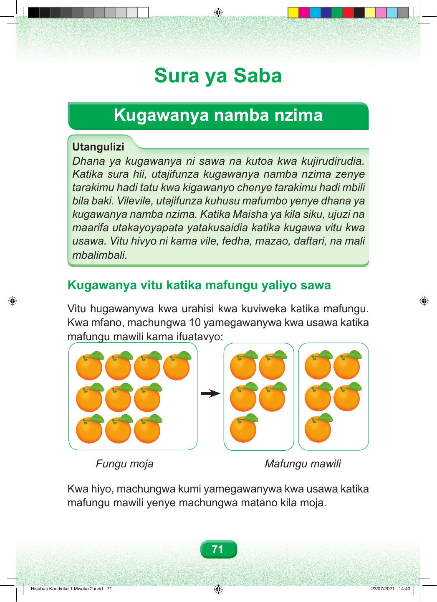

Sura ya Saba Kugawanya namba nzima Utangulizi Dhana ya kugawanya ni sawa na kutoa kwa kujirudirudia. Katika sura hii, utajifunza kugawanya namba nzima zenye tarakimu hadi tatu kwa kigawanyo chenye tarakimu hadi mbili bila baki. Vilevile, utajifunza kuhusu mafumbo yenye dhana ya kugawanya namba nzima. Katika Maisha ya kila siku, ujuzi na maarifa utakayoyapata yatakusaidia katika kugawa vitu kwa usawa. Vitu hivyo ni kama vile, fedha, mazao, daftari, na mali mbalimbali. Kugawanya vitu katika mafungu yaliyo sawa Vitu hugawanywa kwa urahisi kwa kuviweka katika mafungu. Kwa mfano, machungwa 10 yamegawanywa kwa usawa katika mafungu mawili kama ifuatavyo: Fungu moja Mafungu mawili Kwa hiyo, machungwa kumi yamegawanywa kwa usawa katika mafungu mawili yenye machungwa matano kila moja. 71 Hisabati Kundirika 1 Mwaka 2.indd 71 23/07/2021 14:43